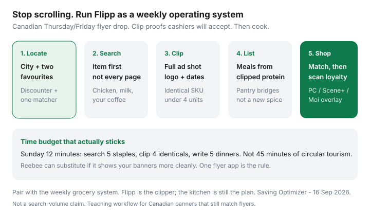

Food & Groceries · Canada
How to Use the Flipp App for Canadian Groceries (Beyond Just Browsing Flyers)
Many Canadians download Flipp, scroll a No Frills circular like a magazine, favourite nothing, and still arrive at the store without a list. The app is not entertainment. Used properly it is the operating system for Canadian price matching and meal planning: location, two favourite banners, item search, till-ready screenshots, a shopping list, then cook.
This is the how-to that sits under the banner-by-banner matching rules and the sales → meals → list loop. It is not a U.S. coupon-clipping tutorial and it does not invent monthly search volumes. Flipp is free. The cost is twelve focused minutes on Thursday or Sunday — or forty unfocused ones if you treat every page like a catalogue.
Disclosure: There is no natural affiliate product inside Flipp itself. Grocery gift cards and cashback portals are adjacent offer types some households use after the list is built. Saving Optimizer may earn a commission if we later add those links. We do not currently claim Flipp, Reebee, or grocer partnerships. This playbook works on a free install and a discounter trip.
Key takeaways
- Set a city and favourite two banners — your discounter plus one matcher — not twelve stores you will never visit.
- Search by staple (chicken, your milk size, coffee) before you browse a flyer for fun.
- Clip a full ad (logo, size, price, dates) if you will match at No Frills, FreshCo, Superstore, Giant Tiger, Maxi, or Save-On.
- Build dinners from clipped protein, then the list. Do not add a SKU because the page was pretty.
- One flyer app. Reebee is a substitute, not a second hobby. Mute notifications you will not act on.
Install, location, and favourite stores
Install Flipp from the App Store or Google Play, or use flipp.com in a browser if you plan at a laptop. Allow location or type your city. Local circulars will not appear for a Toronto postal code if the phone still thinks you are in Buffalo from last summer’s trip.
- Set the city you actually shop in. A downtown core and a suburb can show different Walmart and FreshCo flyers.
- Favourite two banners for this month: the discounter you walk (No Frills, FreshCo, Food Basics, Maxi, Super C, Walmart) plus the store whose ads you will match from if different.
- Add Scene+, PC Optimum, or Moi in their apps. Flipp does not load those offers for you.
- Create one shopping list named for the week (“16 Sep — thighs + dal”), not a graveyard of 2019 lists.
Walmart Canada does not match competitor grocery ads. You can still favourite Walmart as a source flyer if your No Frills or FreshCo board lists Walmart. That one-way street is in the matching system; the app setup is just “do not favourite twelve banners.”

Search by item vs browse by flyer
Browsing a flyer is how you discover a $4.99 cake you did not need. Searching an item is how you find whether your chicken brand is a loss leader this week at a store you will actually visit.
| Job | Use search | Use browse |
|---|---|---|
| Weekly protein | Chicken, pork, tofu, eggs, lentils — your usual SKUs | Only after search if you need a second cut |
| Staples you always buy | Your milk size, coffee, oats, canned tomatoes | Skip the snack pages |
| Price-match identicals | Exact brand + size across favourite banners | Confirm the ad layout for a till screenshot |
| Produce in season | One search (“bananas”, “cabbage”) | A produce page if your banner prices bulk bags |
| Entertainment | Never | This is how $75 weeks become $110 weeks |
Search results mix banners. That is the point. If FreshCo and No Frills both have thighs, pick the store you were visiting anyway — or clip the cheaper identical for a match at the other till, inside the four-unit cap. Policies: FreshCo 1¢ beat and Won’t Be Beat.
Shopping lists and clipping proofs for price match
Flipp lists are useful when they are short. Five dinners plus pantry bridges. Not 80 taps of “maybe.”
- Add the clipped protein and two staples to the list from the ad tile so the price travels with the item.
- Add fridge leftovers as checked-off lines (“use cabbage”) so you do not rebuy them.
- For any SKU you will match: screenshot the full ad — banner logo, product, size, price, date range. Cropped zoom-ins of a dollar figure get refused.
- Put match screenshots in a phone album named “Till.” Open it before you unload. One screenshot per SKU.
- Quantity: plan around four units at No Frills and FreshCo. The list should not say “bunker.”
Till etiquette: a complete Flipp ad is a normal document at matching banners. A meme with the store name cropped off is how cashiers learn to dread the phone. Give them a date range.
Loyalty member prices, spend-X deals, and online-only carts are still not flyer matches even if Flipp displayed a pretty tile. If the cheap number needs an app scan at the other banner, it is not an ad. Details in the matching system.
Weekly planning rhythm with meal ideas
Park this inside the 20-minute Sunday loop. Most Canadian grocery flyers drop Thursday; some Friday. You do not need to live on the phone Thursday night unless you are matching a short-dated meat ad.
- Thursday or Friday, 8 minutes: search five staples, clip up to four identicals, ignore the rest.
- Sunday, 12 minutes: fridge photo, five dinners from the protein (flyer meal planning), load PC / Scene+ / Moi offers that match the list.
- Shop one discounter. Match at the front of the belt. Scan loyalty on the way out.
- Cook a pot of grains and portion the protein the same night so Flipp’s “win” does not become compost. Waste systems and budget meal prep take it from here.
Sample Ontario week (labelled, not a survey): search “chicken thighs,” clip No Frills $3.99/lb (example of a flyer-style loss leader), plan three thigh dinners plus lentil dal from pantry, match Walmart ketchup if identical and on the board, skip salmon at $16/lb. That is Flipp as OS. Scrolling the bakery page is not.
Flipp vs Reebee: practical differences
Reebee still exists as a flyer browser in Canada. Flipp acquired Reebee years ago; the products can still look different on a given week. The rule in every prior wave is the same: one flyer app.
| Flipp | Reebee | |
|---|---|---|
| Best at | Item search across flyers + shopping lists | Clean full-page circulars for some banners |
| Price-match proofs | Screenshot the tile or page with logo and dates | Same rule — full page often looks more “like a flyer” |
| Lists | Built in; good enough if you keep them short | Use if you already live there; do not dual-list |
| When to switch | Your discounter’s flyer is missing or search is junk that week | Flipp’s layout for that banner is unreadable |
| What not to do | Install both and browse twice | Treat a second app as a personality |
If Reebee shows your Save-On or Super C circular more cleanly this week, use Reebee for eight minutes and stop. The matching till does not care which app took the screenshot if the ad is complete and current.
Privacy and notification settings that matter
Flipp wants location to serve local ads. That is the product. You can:
- Set a city manually and deny live GPS if you do not want background location.
- Turn off push for “hot deals” you will never drive to. Keep a Thursday flyer reminder if it actually opens the app; otherwise put Thursday on a calendar and mute the rest.
- Skip creating an account if a guest install already shows your banners. An account helps sync lists across phone and laptop — useful, not required.
- Do not grant every retailer “personalized offer” toggle if it just means more snack tiles. Your loyalty personalization lives in PC Optimum, Scene+, and Moi, not in Flipp.
Notification tax: a lock-screen pizza deal at 4:30 p.m. is how $300 months die. If a ping is not your two favourite banners on flyer day, it is advertising. Mute it.
Common mistakes new users make
- Scrolling instead of searching. You will remember the cake. You will forget the unit price on oats.
- Favouriting every banner in the city. Decision fatigue. Two stores. The rotation guide can wait until the first store is a habit.
- Clipping fifty 30¢ items. Cashiers and you will both quit. Three proteins and two staples.
- Cropped screenshots. Logo and dates missing → refusal. Full ad.
- Matching a different size or a U.S. circular. Identical SKU, Canadian flyer, local board.
- Driving to Walmart to price match. They will not match the other grocer. Clip Walmart, shop the matcher.
- Ignoring unit price. A matched name brand can still lose to store-brand oats that were never on sale.
- Never loading loyalty. Flipp decided the shelf price. PC, Scene+, or Moi is a three-minute overlay in a different app. See the three-program comparison.
- Building a list you will not cook. If the protein will not be portioned tonight, you bought a science project. Pair with budget meal prep.
Flipp is a clipper. The kitchen is still the plan. Gift-card cashback, if you enjoy paperwork, happens after the list exists — portal stacks — not as a reason to open a third app before you know what is for dinner.
Sources & date stamps
- Flipp Help / Flipp Tipps on Canadian price matching (including No Frills and FreshCo explainers; FreshCo post dated 10 May 2023 — verify against current store legal copy).
- FreshCo legal disclaimer and No Frills Won’t Be Beat public copy (reviewed 16 Sep 2026) for what a digital ad must be.
- True Canadian Finds, Canadian stores that price match (2026); Just Keeping It Real grocery-saving tips for Canadians (community how-to, not a volume tool).
- Statistics Canada Daily, CPI August 2026 (14 Sep 2026): food from stores +2.8% year over year — why flyer-first still pays even when headline inflation cooled.
Frequently asked questions
Is Flipp free to use in Canada?
Yes. Flipp is a free flyer and shopping-list app. You do not need a paid tier to search items, clip ads, or build a list. Retailers pay to be in the circulars; you pay with attention and optional location access.
Can I show a Flipp screenshot at No Frills or FreshCo to price match?
Usually yes if it is a current flyer ad: banner logo, product, size, price, and date range visible. Cropped memes and loyalty-only prices get refused. FreshCo and No Frills both name print or digital ads. Photograph the competitor board at your store first.
Should I use Flipp or Reebee?
Pick one flyer app and stay there. Flipp is the usual Canadian default for item search plus lists. Reebee can show some banners more cleanly. Running both is how people spend 40 minutes browsing and still arrive without a list.
Do I need to share my location with Flipp?
Location (or a typed city) is how local flyers appear. You can set a city without live GPS if you prefer. Turn off sale-spam notifications you will not act on. The weekly drop still happens Thursday or Friday whether or not the phone buzzes.
Is Flipp a grocery-delivery or loyalty app?
No. Flipp shows flyers and lists. PC Optimum, Scene+, and Moi live in their own apps. Delivery is PC Express, Voilà, or Instacart. Use Flipp to decide the menu; scan loyalty at the till.